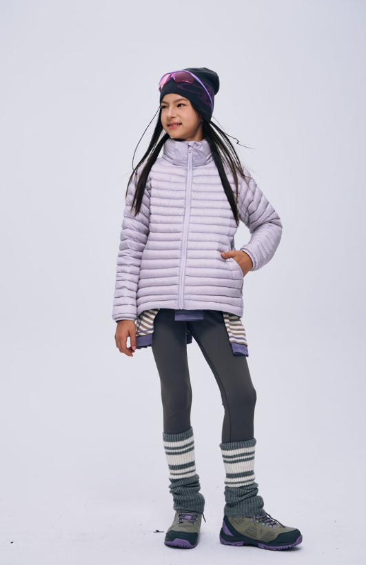
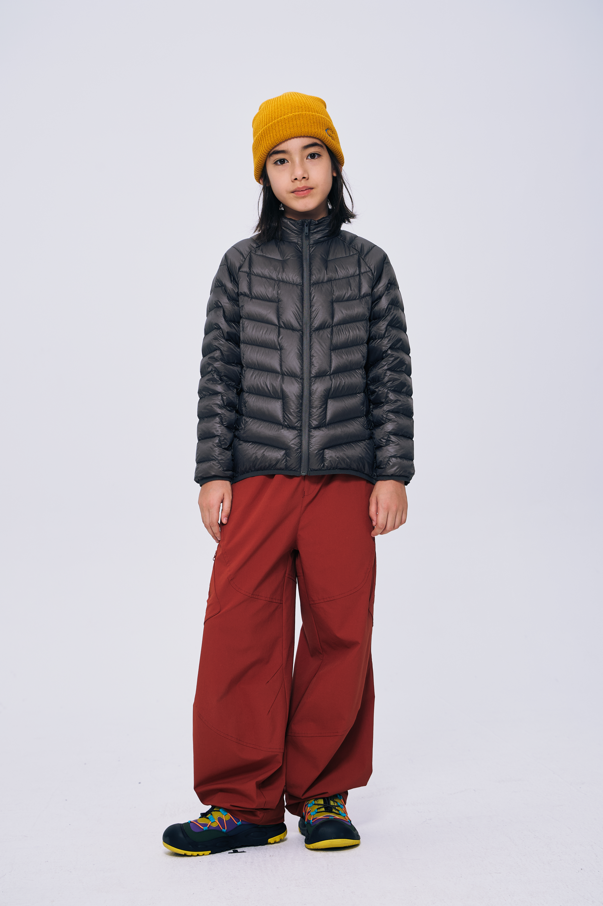
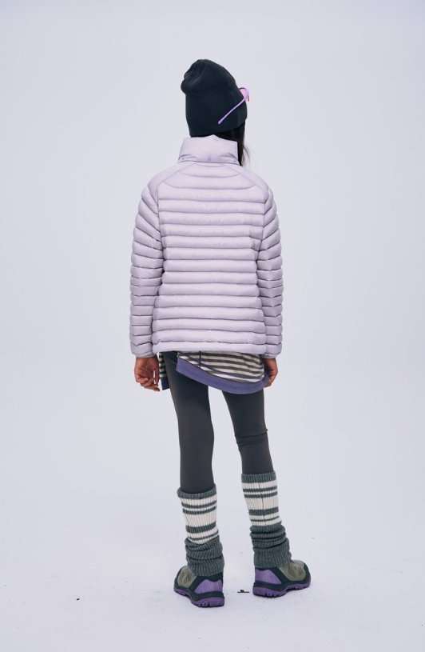

选购指南 · 阅读样式
校服内搭，先看哪些信息？
先核对具体款式的成衣尺寸，再考虑日常叠穿需要。年龄与“大码”标签，不能代替版型和尺寸判断。
- 确认款式与版本。
- 查看对应尺码表与测量说明。
- 核对穿法及护理建议。
编辑草稿 · 选款关系与正文待商品审核。
回看产品信息样式 ↗YOUTH FASHION MOTION
WINTER, AT YOUR OWN PACE.
探索鹅绒系列 ↗


以鹅绒服建立冬季轮廓。羊毛 T 恤与软壳裤，作为后续经确认的搭配品类。
内部信息样式示意 · 无虚构产品参数或检测结论。
02 / 选购指南
YOUR
OWN PACE.
选购指南 · 阅读样式
先核对具体款式的成衣尺寸，再考虑日常叠穿需要。年龄与“大码”标签，不能代替版型和尺寸判断。
编辑草稿 · 选款关系与正文待商品审核。
回看产品信息样式 ↗